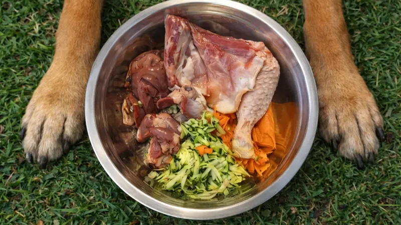
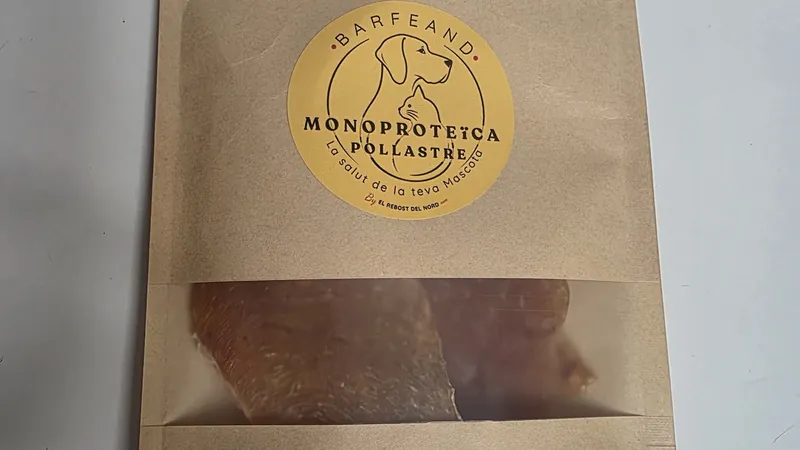
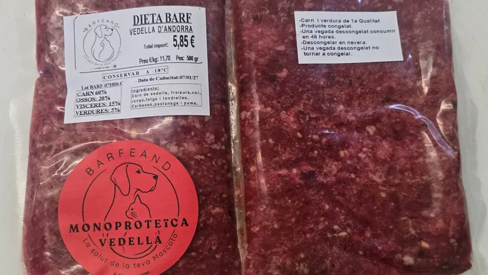
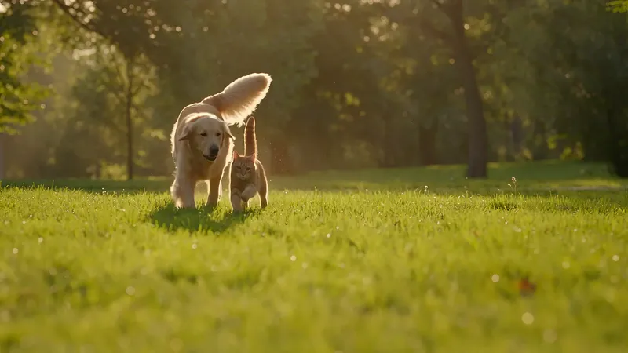

Blog BARFEAND
Alimentació natural per a gossos i gats
Consells pràctics sobre BARF, escrits des de la nostra carnisseria a Andorra la Vella: quantitats, temporades, receptes i el dia a dia amb la teva mascota.
Articles

Alimentació
El ranxo no és menjar: per què el teu gos i el teu gat mereixen menjar real
D’on ve el pinso, quins efectes pot tenir en gossos i gats i per què apostem pel menjar real.

Snacks
Snacks de pit de pollastre deshidratat: nova línia natural de BARFEAND
Pit de pollastre de pastura deshidratat, sense additius: com el fem i com fer-lo servir per educar, premiar i reforçar.

Hidratació
BARF i hidratació: per què el teu gos o gat beu menys aigua
Per què és normal que begui menys amb BARF, què cal vigilar i consells perquè estigui ben hidratat.

Alimentació
El teu gos surt més a la muntanya a la tardor: com ajustar-ne el menjar
Com saber si necessita més menjar, quan donar-li menjar els dies d’excursió i què revisar en tornar.
Comencem?